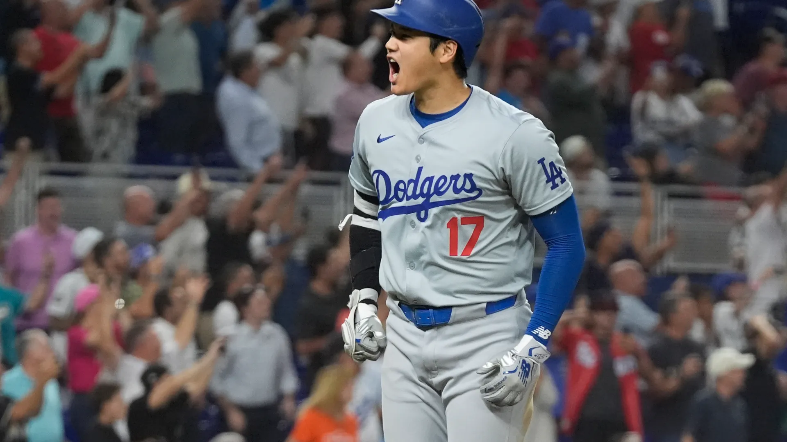

Championship Contenders
October 13, 2024 by JR. Celestin

The Milwaukee Bucks are poised to dominate the 2024/2025 NBA season and bring home the championship. With the undeniable talent of Giannis Antetokounmpo, arguably the best player in the league, the Bucks have built a powerhouse team ready to crush the competition.
The addition of key players in both the offensive and defensive lineup has strengthened Milwaukee's ability to control the court. The team's chemistry, coupled with Giannis’ leadership, makes them an unstoppable force this season.
Milwaukee has consistently been at the top, and now they are hungrier than ever. The Bucks' depth and versatility make them a nightmare for any opponent. Their sharp shooting, relentless defense, and strategic play are unmatched.
As other teams falter under pressure, the Bucks’ confidence and resilience will shine through. Fans can expect nothing less than a championship celebration in Milwaukee in 2025.
History MADE
September 30, 2024 by Damian Wayne

Shohei Ohtani’s legendary 50/50 game will be remembered as one of the greatest feats in baseball history. Achieving 50 home runs and 50 stolen bases in a single season showcases his unmatched athleticism and versatility. Ohtani’s ability to hit for power while also showcasing his speed on the bases is a rare combination that no other player can match.
Each home run he launched sent fans into a frenzy, while every stolen base highlighted his remarkable instincts and agility, solidifying his status as a true two-way player.
This remarkable achievement is not just a testament to Ohtani’s physical gifts but also to his relentless work ethic and determination. In a league where players often specialize in one area, Ohtani is breaking barriers and rewriting the record books.
As he continues to electrify fans and leave opponents in the dust, it’s clear that he is a transformative figure in baseball. The legacy of Shohei Ohtani’s 50/50 game will inspire generations of players to dream big and pursue excellence in every aspect of the game.